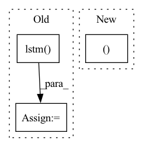

Pattern ID :9716
Before Change
batch_size, _, F_bin, T_bin = input.size()
log_amplitude = torch.log(input + eps)
x = self.lstm( log_amplitude) // -> (batch_size, T_bin, F_bin)
x = self.fc(x) // -> (batch_size, T_bin, embed_dim*F_bin)
x = x.view(batch_size, T_bin, embed_dim, F_bin)
x = x.permute(0,2,3,1).contiguous() // -> (batch_size, embed_dim, F_bin, T_bin)After Change
log_amplitude = torch.log(input + eps)
x = log_amplitude.squeeze(dim=1).permute(0, 2, 1).contiguous() // -> (batch_size, n_frames, n_bins)
x, (_, _ ) = self.rnn(x) // -> (batch_size, n_frames, n_bins)
x = self.fc(x) // -> (batch_size, n_frames, embed_dim*n_bins)
x = x.view(batch_size, n_frames, embed_dim, n_bins)
x = x.permute(0, 2, 3, 1).contiguous() // -> (batch_size, embed_dim, n_bins, n_frames)In pattern: SUPERPATTERN
Frequency: 3
Non-data size: 3
Instances Fragment ID: 34899348
Project Name: tky823/dnn-based_source_separation
Commit Name: 14a31d0fab0f62cd6e840c554223d5475068ef34
Time: 2021-06-01
Author: 40362510+tky823@users.noreply.github.com
File Name: src/models/adanet.py
M Class Name: ADANet
N Class Name: ADANet
M Method Name: extract_latent(4)
N Method Name: extract_latent(4)
M Parent Class: DANet
N Parent Class: DANet
M File Name: src/models/adanet.py
N File Name: src/models/adanet.py
M Start Line: 51
M End Line: 59
N Start Line: 51
N End Line: 62
Before Change
else:
hiddens1 = None
hiddens2 = None
lstm_last, hiddens1 = self.lstm( x, hiddens1)
lstm2_last, hiddens2 = self.lstm2(x, hiddens2)
concat_lstm = torch.concat([lstm_last, lstm2_last], dim=-1)
logits = self.linear(concat_lstm)
loss = self.loss_func(logits, y)After Change
// training_step is needed 2 step for 1 batch (1 step: 0~99, 2 step: 100~199)
// very cleverly, we just using hiddens parameter, lightning"s tbptt not connected new batch"s hiddens to past one
x, y = batch
logits, hiddens1, hiddens2 = self(x, hiddens)
loss = self.loss_func(logits, y)
self.log("train_loss", loss, sync_dist=(self.device != "cpu"))
// look this discussion for tbptt experiment (https://github.com/Lightning-AI/lightning/discussions/15643) Fragment ID: 34899349
Project Name: yoosunghyun/pytorch-lightning-template
Commit Name: e31ba2930352623556b022885ef2cb269370c975
Time: 2022-12-04
Author: shyu0522@hanmail.net
File Name: rnn_model.py
M Class Name: LSTMModel
N Class Name: LSTMModel
M Method Name: training_step(4)
N Method Name: training_step(4)
M Parent Class: LightningModule
N Parent Class: LightningModule
M File Name: rnn_model.py
N File Name: rnn_model.py
M Start Line: 34
M End Line: 42
N Start Line: 60
N End Line: 60
Before Change
insample_y = torch.cat(( insample_y, stat_exog ), dim=2)
// LSTM forward
insample_y, _ = self.lstm( insample_y)
insample_y = self.adapterW(insample_y)
return insample_y
After Change
if self.stat_exog_size > 0:
stat_exog = stat_exog.unsqueeze(1).repeat(1, seq_len, 1) // [B, S] -> [B, seq_len, S]
encoder_input = torch.cat((encoder_input, stat_exog ), dim=2)
// RNN forward
hidden_state, _ = self.hist_encoder(encoder_input) // [B, seq_len, rnn_hidden_state] Fragment ID: 34899350
Project Name: nixtla/neuralforecast
Commit Name: 9cdb8c8ddd592a3acd47aa982f42bf995092e049
Time: 2022-11-04
Author: mergenthaler.m@gmail.com
File Name: neuralforecast/models/lstm.py
M Class Name: LSTM
N Class Name: LSTM
M Method Name: forward(2)
N Method Name: forward(2)
M Parent Class: BaseRecurrent
N Parent Class: BaseRecurrent
M File Name: neuralforecast/models/lstm.py
N File Name: neuralforecast/models/lstm.py
M Start Line: 78
M End Line: 102
N Start Line: 126
N End Line: 161